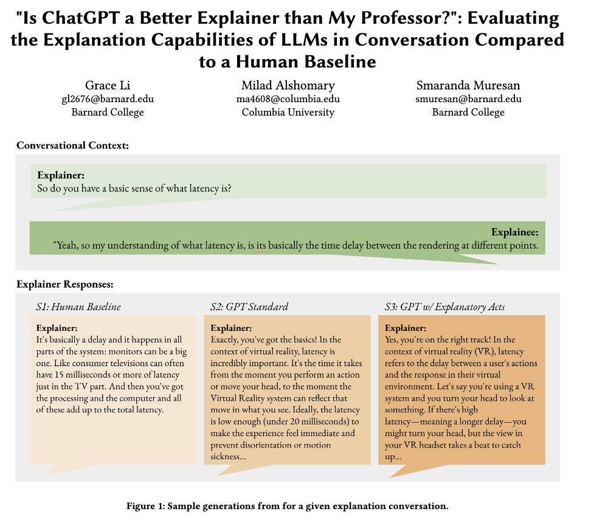
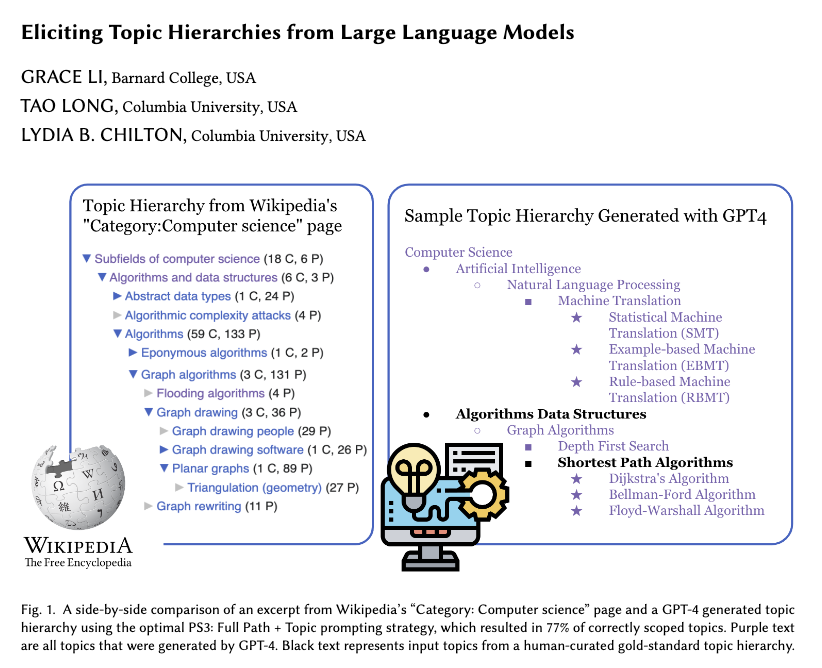
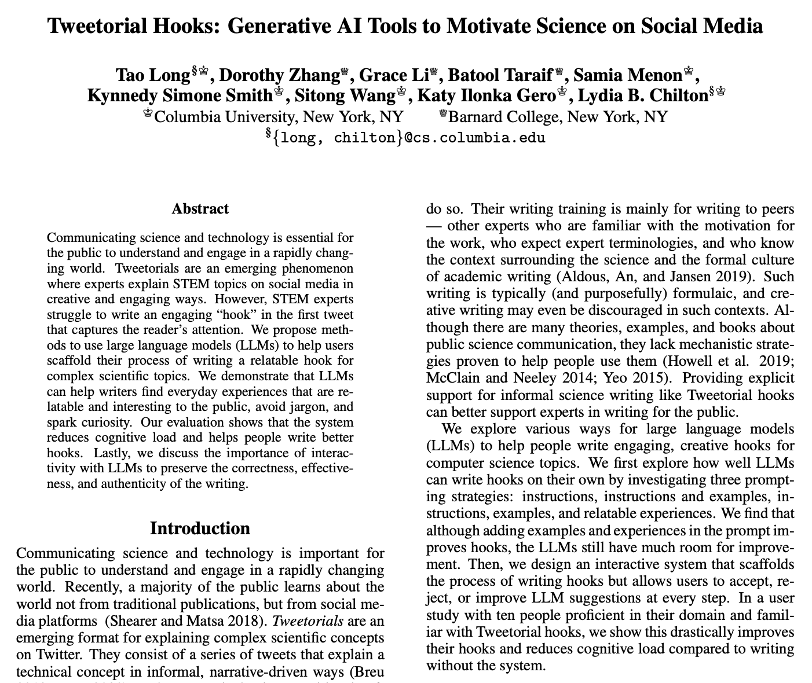
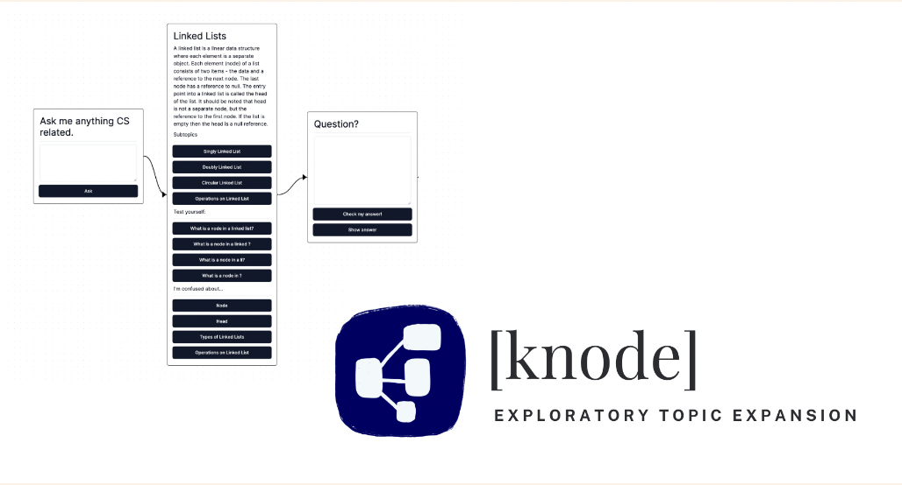
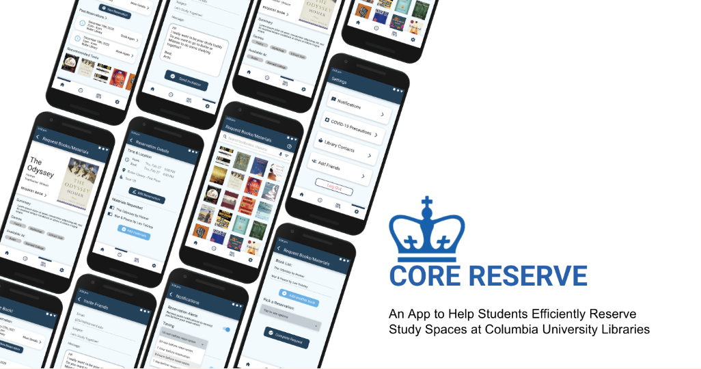
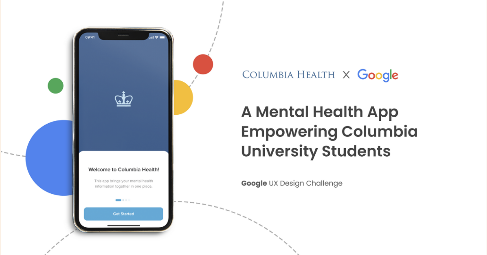
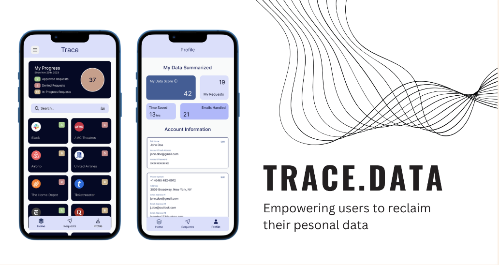

I'm an incoming CS Ph.D Student at Univeristy of Chicago, advised by Professor Mina Lee. Previously, I studied Computer Science and English at Barnard College at Columbia University
My current research with the Columbia University Computational Design Lab is advised by Professor Lydia Chilton. I am exploring writing and creativity support tools and human-AI collaboration. I’m interested in designing collaborative approaches learning and brainstorming:
Currently based in NYC and BOS

Grace Li, Milad Aloshmary, Smaranda Muresan

Grace Li, Tao Long, Lydia B. Chilton

Tao Long, Dorothy Zhang, Grace Li, Batool Taraif, Samia Menon, Kynnedy Smith, Sitong Wang, Katy Gero, Lydia B. Chilton

Role: Researcher and Product Manager
A node-based, interactive, learning system to help students visualize the connections between topics and iteratively explore the different subtopics of an area. Developed during the 2023 LlamaHack @ Cornell Tech.
Download PDF Slides
Role: Product Manager and Visual Designer
Re-designing the existing seat reservation system into a mobile app that streamlines the booking process. Second Runnerup in the 2022 Columbia DevFest Hackathon.
View Prototype
Role: UX Researcher and Product Manager
An app to assist students in navigating the in-network providers for students on the Columbia health insurance plan and assist them in booking appointments. Developed during the Spring 2023 Design@Columbia x Google Design Spring.
Download PDF Slides
Role: Researcher and Product Manager
Helping user reclaim their personal data and digital data privacy through an automated data removal requests from companies and data brokers.
Download PDF Slides